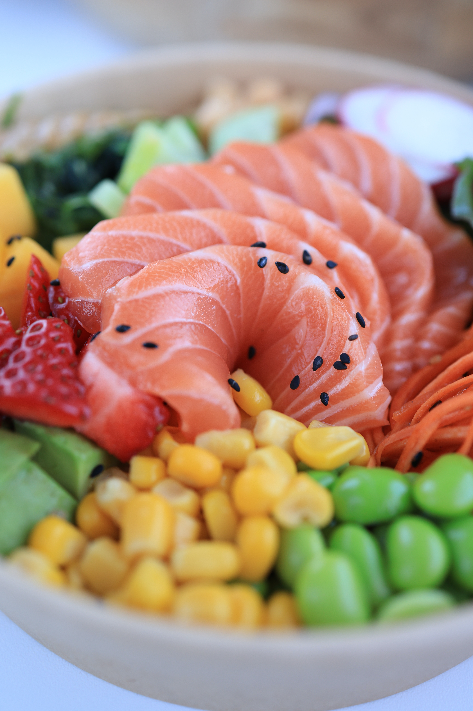

Poke Bowl

Fresh and Healthy.
Ingredients
- 1 lb sushi-grade ahi tuna
- 2 tbsp soy sauce
- 1 tbsp sesame oil
- 1 tbsp rice vinegar
- 1 tsp honey
- 1/4 cup light mayo
- 1 tsp sriracha
- 4 cups cooked brown rice
- 1 cup diced cucumber
- 1/2 cup shredded carrots
- 1/2 cup shelled edamame
- 2 large avocados, peeled and sliced
- 1 tbsp black sesame seeds ▢1 tsp green onion
Preparation:
-
Use a sharp knife to cut tuna into a dice. Add tuna, soy sauce, sesame
oil, rice vinegar, and honey to a medium bowl. Toss to combine. Let the
tuna sit while you prepare the rest of the ingredients.
-
Add mayo and sriracha to a bowl. Stir to combine. Season with salt and
pepper. Soon into a zipplock bag. Cut the tip off. Divide cooked rice
between four bowls. Spoon tuna on one part of the rice. Surround with a
pile of the cucumber, edamame, and carrot. Spread half of an avocado on
top of the bowl.
-
Drizzle the spicy mayo over the bowl. Sprinkle with green onion and
sesame seeds.